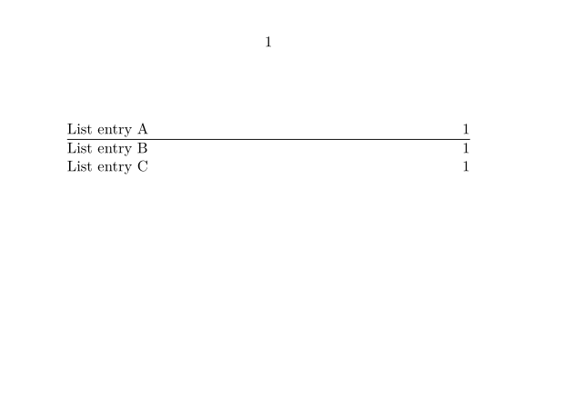
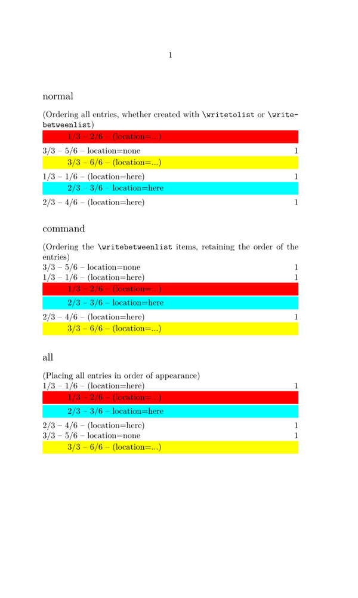

Contents
Summary
Settings
| \writebetweenlist[...][...=...,...]{...} | |
| [...] | list |
| ...=...,... | inherits from \setuplist |
| {...} | command |
Description
The default table of contents is a combined list (see \setupcombinedlist). To write to it you must choose the “level list“ at which your entry should be inserted: \writebetweenlist[chapter][location=here]{\hrule}, \writebetweenlist[section][location=here]{\hrule}, etc.
Examples
basic usage
-
\setuppapersize[A7,landscape] \definelist[Reprints][criterium=all] \starttext \completelist[Reprints] \writetolist[Reprints]{1.}{List entry A} \writebetweenlist[Reprints][location=here]{\hrule} \writetolist[Reprints]{2.}{List entry B} \writetolist[Reprints]{3.}{List entry C} \stoptext
- 
the
location
and
order
options
According to http://archive.contextgarden.net/message/20101213.221208.577b0e51.en.html \writebetweenlist has multiple usage and these are conflicting:
- in order to get the right page info associated it needs to be anchored in the text stream
- in that case a node can interfere with spacing and can come unexpected
- sometimes direct flushing is needed, sometimes delayed
The option order has been added to (1) the flushers and (2) the list placers (as of december 14, 2010).
Regular list entries are bound to a specific location in order to
get the right pagenumber etc. associated. When pushing something
inbetween, it ends up directly in the list. This is the
default because otherwise users will wonder why spacing might get
messed up (due to an unseen but present node). It is possible to
force a location by explicitly setting location=here.
Another way to force a certain order is to set the order option when placing a list.
order=command pushes only commands into the right order, and order=all orders all
entries (which might be too much). In this case no specific location is needed for \writebetweenlist.
The following example shows this:
-
\definepapersize[scroll][width=12cm, height=20cm] \setuppapersize[scroll] \definelist[testlist][criterium=all] \starttext \subject{normal} (Ordering all entries, whether created with \tex{writetolist} or \tex{writebetweenlist}) \placelist[testlist] \subject{command} (Ordering the \tex{writebetweenlist} items, retaining the order of the entries) \placelist[testlist][order=command] \subject{all} (Placing all entries in order of appearance) \placelist[testlist][order=all] % --- and now we put write the entries to the list --- \writetolist [testlist] {1} {1/3 -- 1/6 -- (location=here)} \writebetweenlist[testlist]{ \framed[width=\hsize, frame=off, background=color, backgroundcolor=red, align=flushleft] {\blackrule[width=2.5em, height=0em] 1/3 -- 2/6 -- (location=...)}} \writebetweenlist[testlist][location=here]{ \framed[width=\hsize, frame=off, background=color, backgroundcolor=cyan, align=flushleft] {\blackrule[width=2.5em, height=0em] 2/3 -- 3/6 -- location=here}} \writetolist [testlist] {2} {2/3 -- 4/6 -- (location=here)} \writetolist [testlist][location=none]{W} {3/3 -- 5/6 -- location=none} \writebetweenlist[testlist]{ \framed[width=\hsize, frame=off, background=color, backgroundcolor=yellow, align=flushleft] {\blackrule[width=2.5em, height=0em] 3/3 -- 6/6 -- (location=...)}} \stoptext
- 
Checking with LMTX in 2024-12:
-
order=titleworks only for section titles without injections. -
Use
order=allororder=commandfor lists with injections orlocation=herefor each injection to keep their order of appearance.
Notes
See also
- \definelist
- \setuplist
- strc-lst.mkvi
- \writetolist to write a regular item to a list (with a section number)
- \placelist